- Volte a pagina inicial
- Clique Aqui Para Ir Aos Trilha Sonora
- Clique Aqui Para Ir A Produçao
Elenco de O Último Caçador de Bruxas
Elenco dos Principais personagems do filme
- VIN DIESEL
 Foto do VIN DIESEL
Foto do VIN DIESEL
- Atividades: Ator, Produtor, Produtor de set
- Nome de nascimento: Mark Sinclair
- Nacionalidade: Americano
- Nascimento: 18 de julho de 1967 (Alameda County, Califórnia, EUA)
- Idade: 54 anos
- ROSE LESLIE
 Foto da ROSE LESLIE
Foto da ROSE LESLIE
- Atividade: Atriz
- Nome de nascimento: Rose Eleanor Arbuthnot-Leslie
- Nacionalidade: Britânica
- Nascimento: 9 de fevereiro de 1987
- Idade: 35 anos
- ELIJAH WOOD
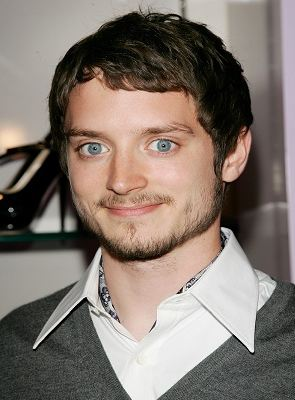
Foto do ELIJAH WOOD
- Atividades: Ator, Produtor, Coprodutor
- Nacionalidade: Americano
- Nascimento: 28 de janeiro de 1981 (Cedar Rapids, Iowa, EUA)
- Idade: 41 anos
- ÓLAFUR DARRI ÓLAFSSON
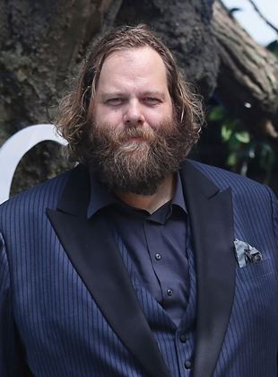
Foto do ÓLAFUR DARRI ÓLAFSSON
- Atividade: Ator
- Nacionalidade: Americano
- Nascimento: 13 de março de 1973
- Idade: 49 anos
- RENA OWEN
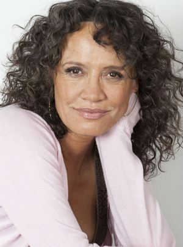
Foto da RENA OWEN
- Atividade: Ator
- Nacionalidade: Neo-zelandesa
- Nascimento: 22 de julho de 1962
- Idade: 59 anos
- JULIE ENGELBRECHT
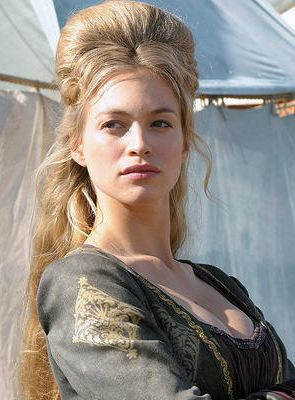
Foto da JULIE ENGELBRECHT
- Atividade: Ator
- Nome de nascimento: Julie Charon Engelbrecht
- Nacionalidade: Alemã
- Nascimento: 30 de junho de 1984
- Idade: 37 anos
- MICHAEL CAINE
 Foto do MICHAEL CAINE
Foto do MICHAEL CAINE
- Atividades: Ator, Produtor, Intérprete (músicas do filme)
- Nome de nascimento: Maurice Joseph Micklewhite Jr
- Nacionalidade: Britânico
- Nascimento: 14 de março de 1933 (Bermondsey, Londres, Inglaterra)
- Idade: 89 anos
- JOSEPH GILGUN
 Foto do JOSEPH GILGUN
Foto do JOSEPH GILGUN
- Atividades:Ator, Criador, Produtor Executivo
- apelido: Joe Gilgun
- Nacionalidade: Britânico
- Nascimento: 9 de março de 1984 (Chorley, Inglaterra, Reino Unido)
- Idade: 38 anos
- ISAACH DE BANKOLÉ
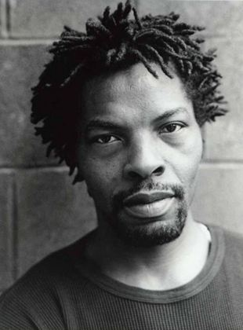
Foto do ISAACH DE BANKOLÉ
- Atividades:Ator, Produtor Executivo
- Nacionalidade: Costa-marfinense, Beninense
- Nascimento: 12 de agosto de 1957 (Abidjan, Costa do Marfim)
- Idade: 64 anos
- LOTTE VERBEEK
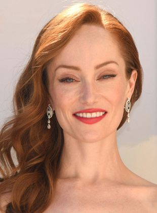
Foto da LOTTE VERBEEK
- Atividade: Atriz
- Nacionalidade: Holandesa
- Nascimento: 24 de junho de 1982 (Venlo, Holanda)
- Idade: 39 anos
- DAWN OLIVIERI
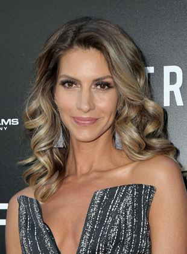
Foto da DAWN OLIVIERI
- Atividade: Atriz
- Nacionalidade: americana
- INBAR LAVI
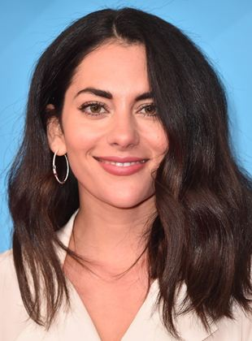
Foto da INBAR LAVI
- Atividade: Atriz
- Nacionalidade: Israelense
- Nascimento: 27 de outubro de 1986 (Ramat Gan, Israel)
- Idade: 35 anos
- ARMANI JACKSON
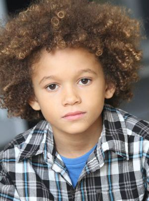
Foto do ARMANI JACKSON
- Atividade: Ator
- Nacionalidade: americano
- AIMEE CARRERO
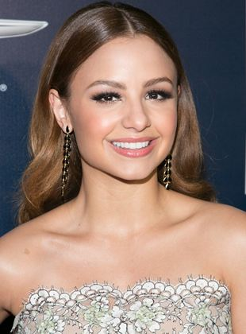
Foto da AIMEE CARRERO
- Atividades:Atriz, Produtora Executiva
- Nacionalidade: Dominicana
- Nascimento: 15 de julho de 1988 (São Domingos, República Dominicana)
- Idade: 33 anos
- BEX TAYLOR-KLAUS
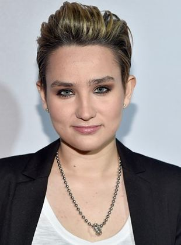
Foto da BEX TAYLOR-KLAUS
- Atividades:Atriz
- Nacionalidade: Americana
- Nascimento: 12 de agosto de 1994
- Idade: 27 anos
- BONNIE MORGAN
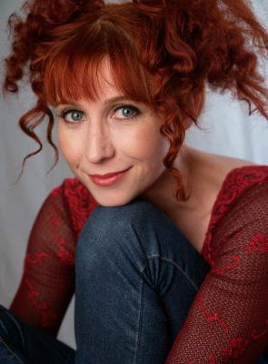
Foto da BONNIE MORGAN
- Atividade: Atriz
- Nacionalidade: americana
- SHANE CALLAHAN
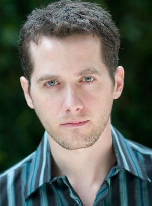
Foto do SHANE CALLAHAN
- Atividade: Ator
- Nacionalidade: Indefinido
- ASHEQ AKHTAR
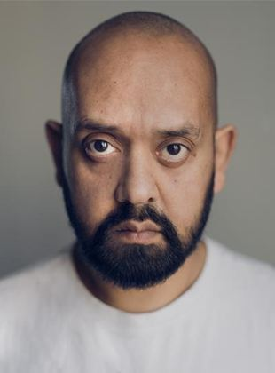
Foto do ASHEQ AKHTAR
- Atividade: Ator
- Nacionalidade: Britânico
Volte a o Topo
TRILHA SONORA
- CIARA
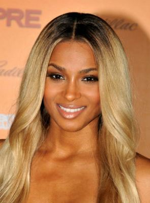
Foto da CIARA
- Atividade: Atriz, Autor dos créditos musicais
- Nome de nascimento: Ciara Princess Harris
- Nacionalidade: Americana
- Nascimento: 25 de outubro de 1985
- Idade: 36 anos
Volte a o Topo
PRODUÇÃO
- MARK CANTON
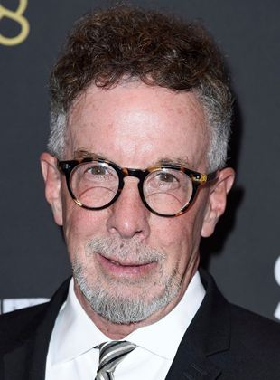
Foto do MARK CANTON
- Atividades: Produtor, Produtor Executivo
- Nacionalidade: Americano
- Nascimento: 19 de junho de 1949 (Queens, Nova York, EUA)
- Idade: 72 anos
- SAMANTHA VINCENT
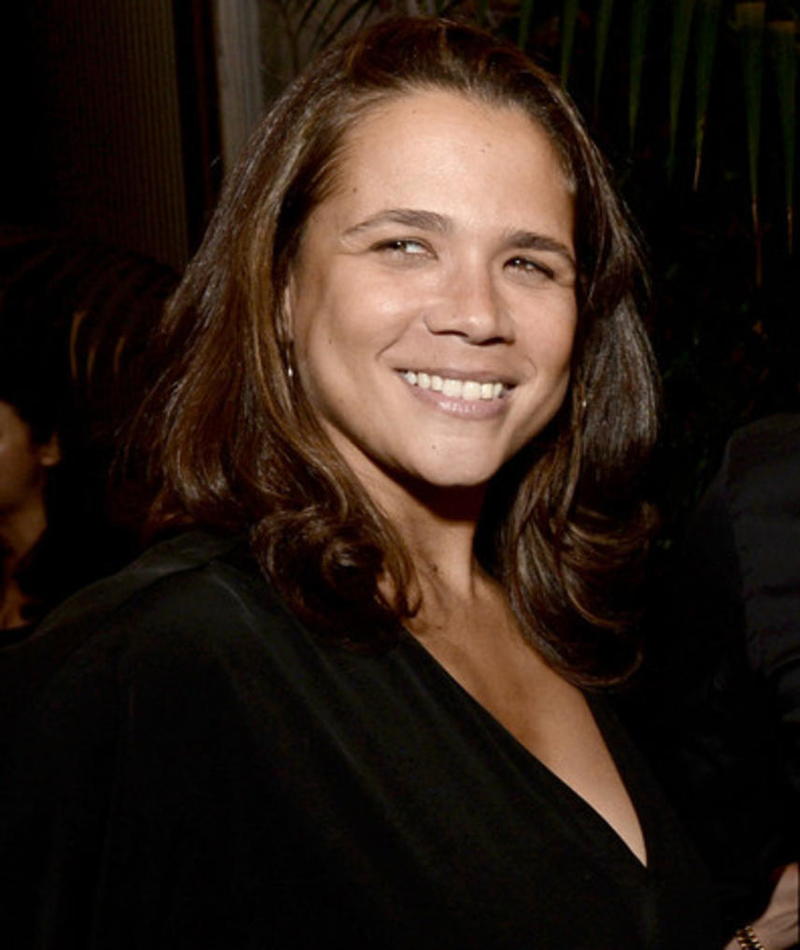
Foto da SAMANTHA VINCENT
- Atividade: Ator
- Nacionalidade: Americana
- ADAM GOLDWORM
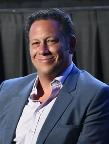
Foto do ADAM GOLDWORM
- Atividade: Produtor, Produtor Executivo
- Nacionalidade: Indefinido
- Volte a pagina inicial
- Volte a o Topo